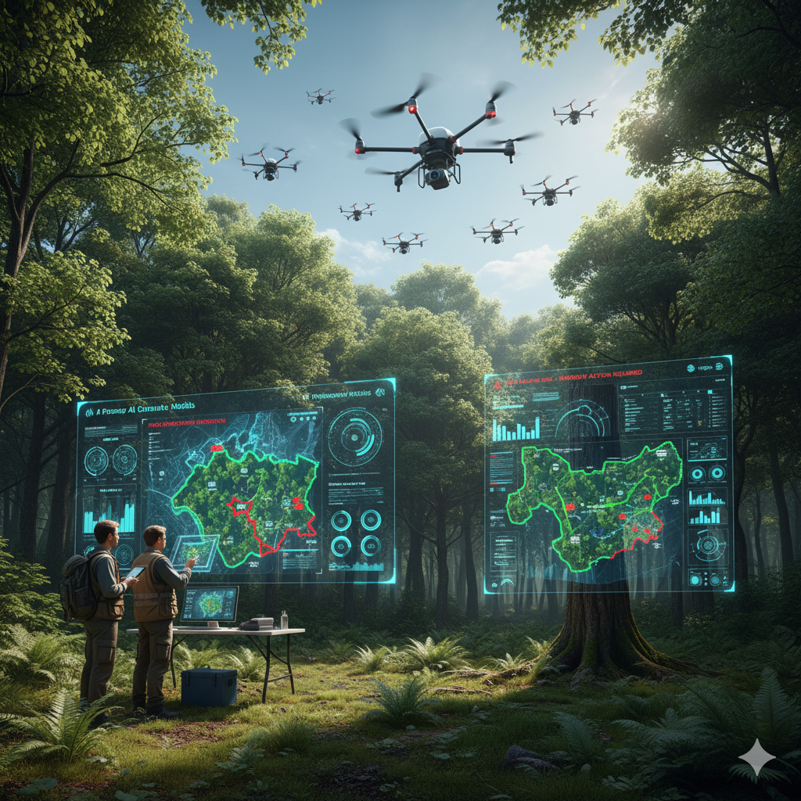

Explore how we are transforming different industries with AI, AR, and VR
Healthcare
Accurate Diagnosis: AI analyzes medical data and images with speed and precision, detecting diseases such as cancer, heart conditions, and diabetic retinopathy at earlier stages, which leads to better treatment outcomes
Predictive Analytics: AI predicts health risks by evaluating patient history and current health data, enabling early interventions and preventative care strategies.
Improved Patient Care: By automating repetitive tasks and providing real-time clinical recommendations, AI frees healthcare professionals to focus on patient interactions, ultimately improving care quality and patient satisfaction.
Streamlined Administration: Tasks such as data entry, scheduling, and insurance processing are efficiently managed by AI systems, reducing staff workload and operational costs.
Remote Monitoring and Assistance: Wearable technologies and digital platforms powered by AI facilitate remote health monitoring and digital consultations, expanding access especially in rural and underserved areas.
Insurance
Voice bots can automate claims intake, initiate requests after incident reporting, and authenticate identity by analyzing speech patterns
AI can detect fraudulent intent by interpreting anomalies in tone or language, flagging risky claims for further review.
Policy updates, payment handling, and customer queries on voice calls are handled efficiently, cutting wait times and boosting satisfaction
AI-powered claims systems analyze structured and unstructured claims data, estimate damages, and instantly detect fraud.
Policy validation (checking coverage, automatic payouts, and settlement proposals) is streamlined by AI decision engines.
Education
Personalized learning: AI tailors content to each student’s pace, strengths, and weaknesses, providing customized lesson plans and real-time feedback to improve understanding.
Automation: AI automates administrative tasks such as grading and scheduling, freeing educators to focus on teaching and student support
Intelligent tutoring: AI-driven systems mimic one-on-one instruction, offering targeted guidance, identifying knowledge gaps, and adapting the difficulty of tasks.
Interactive learning: AR enables students to explore 3D models, virtual dissections, and overlay digital content onto real-world objects, making abstract concepts concrete and engaging
Real-world context: AR brings geography, history, and science topics to life by augmenting physical environments, helping students grasp difficult subjects more intuitively.

Forestry
AI analyzes satellite, drone, and sensor data to spot deforestation, illegal activity, and habitat changes faster and more accurately than manual inspection
Machine learning models automate tree species identification, health diagnostics, biomass measurement, and forest inventory, streamlining work that used to require labor-intensive field surveys
AI-powered solutions enable rapid assessment of tree heights, crown sizes, and disease outbreaks for proactive forest management and sustainability
AR tools let stakeholders visualize forest structures, biodiversity, and LiDAR-based tree models in real-world environments, bridging physical and digital data for planning and education
VR is used for training workers on machinery operation and safety, offering realistic, risk-free practice environments that save time and reduce hazards
Manufacturing
Predictive maintenance: AI analyzes sensor and equipment data to predict failures before they happen, reducing costly downtime and extending machine life.
Quality control: AI-powered vision systems detect defects quickly and accurately, cutting down on waste and maintaining product standards
Assembly and maintenance: AR overlays digital instructions onto real-world objects, helping workers assemble parts, troubleshoot, and maintain equipment with step-by-step guidance
Immersive training: VR simulates machinery operation, safety protocols, and assembly processes, letting workers practice in lifelike, risk-free environments
Design and prototyping: VR enables virtual product and facility walkthroughs, revealing design flaws and supporting faster iterations before production
E-Commerce
Personalized product recommendations, dynamic pricing, and targeted marketing improve conversion rates and enhance customer satisfaction
AI-driven data analytics yield insights for demand forecasting, inventory management, and optimizing promotions, unlocking smarter business decisions and operational savings
AR lets customers preview products in their real environment (virtual try-ons for fashion, placing furniture at home), raising buyer confidence and reducing returns
VR enables virtual store visits, giving shoppers the ability to browse, select, and interact with products as if in a physical showroom.
Rich behavioral data gathered via AR/VR helps brands optimize offers and storefronts for continued competitive advantage
Automotive
AI, AR, and VR are significantly enhancing the automotive industry by improving design, manufacturing, safety, training, and customer experiences, while also reducing costs and accelerating innovation.
Enhances safety with advanced driver assistance systems (ADAS) like collision avoidance, lane-keeping, and driver fatigue monitoring, reducing accidents and improving reliability.
Revolutionizes vehicle design and prototyping by enabling real-time virtual modeling, quick adjustments, and reducing physical prototypes, saving time and materials.
Enables immersive vehicle design and virtual prototyping, reducing development costs and accelerating design cycles
Enhanced customer experience with interactive virtual showrooms, personalized features, and AR-based exploration.
Finance
AI, AR, and VR are transforming finance through automation, enhanced data visualization, immersive customer experiences, improved risk management, and personalized financial services.
Automation of manual processes such as transaction processing, compliance, and customer support leads to improved operational efficiency and reduced costs
AR enables interactive payment solutions, virtual property exploration, and easy access to banking services like branch and ATM locations through mobile apps.
VR offers immersive training for financial professionals, improving skills in customer service, risk management, and product knowledge without physical constraints.
• Enhanced operational efficiency, reducing manual labor and human error, with faster, more reliable processes